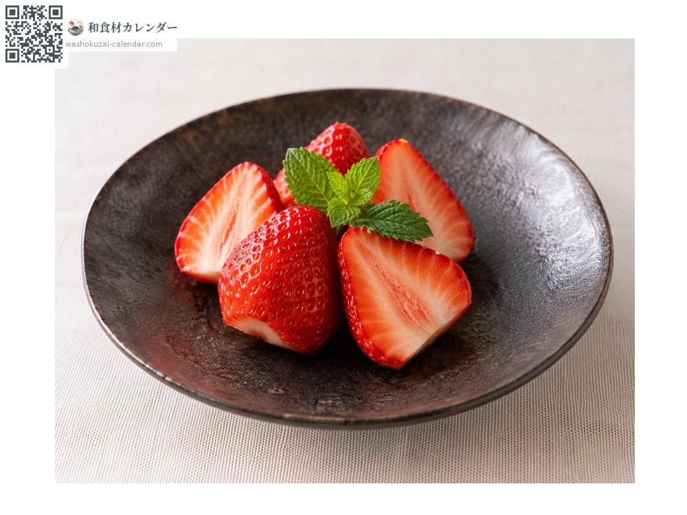
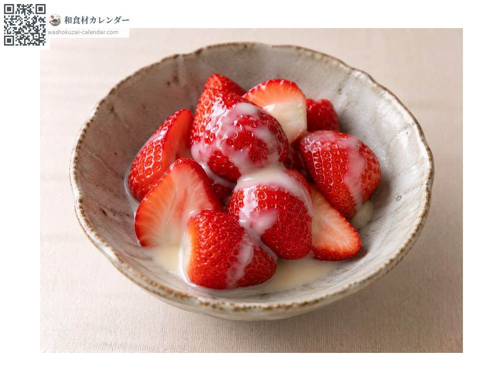
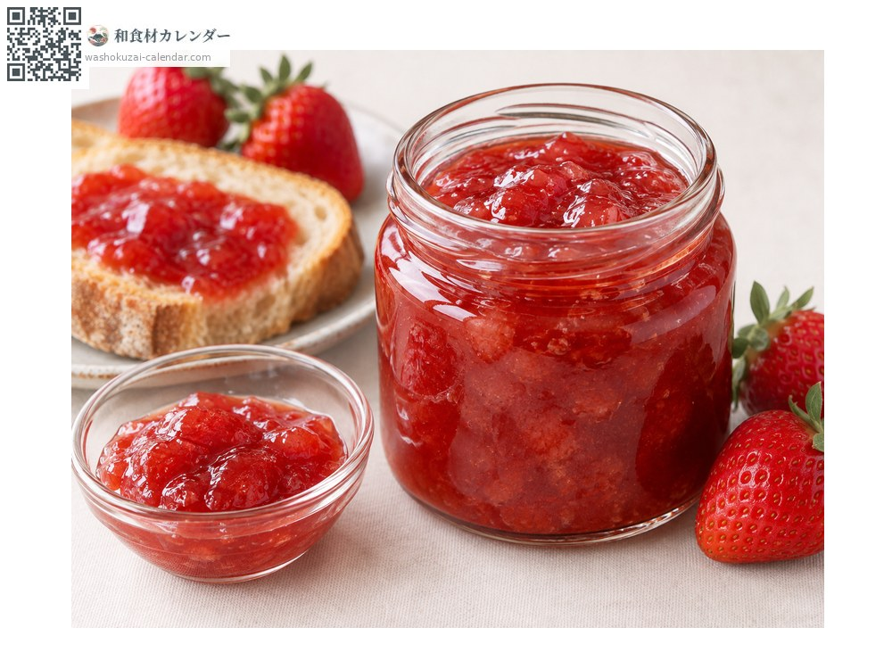
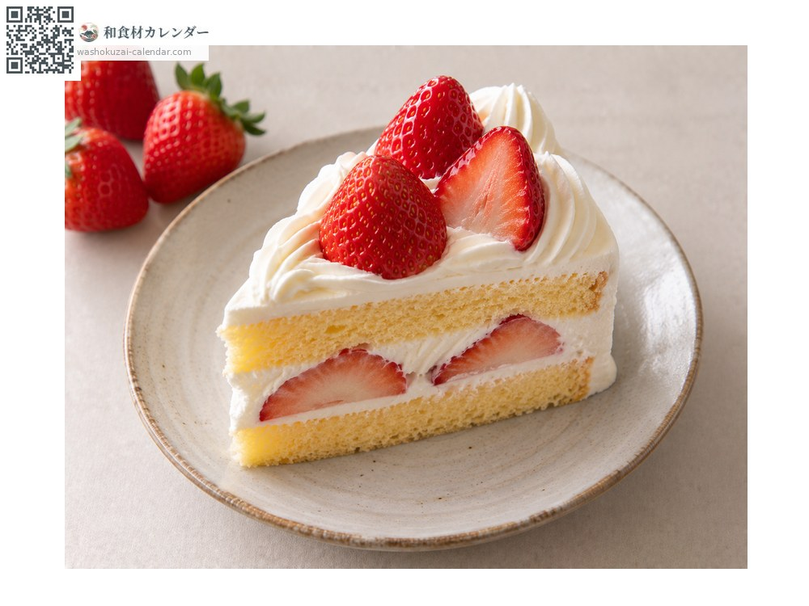

果物
イチゴ
いちご
別名・別表記苺、ichigo
旬は1月・2月・3月・4月

旬の時期
1月
2月
3月
4月
5月
6月
7月
8月
9月
10月
11月
12月
旬出回り
調理法

そのまま
洗ってヘタを取り、先端から食べると甘い。

練乳がけ
定番の食べ方。

ジャム
砂糖とレモン汁で煮詰める。

ショートケーキ
生クリームと。
選び方
ヘタが濃い緑で反り返り、先端まで赤く色づいているもの。表面のつぶつぶがはっきりしているもの。
保存方法
洗わずにパックのまま冷蔵。傷みやすいので2〜3日で食べ切る。洗うのは食べる直前。
主な産地
豆知識
先端のほうが糖度が高い。ヘタ側から食べると最後まで甘く感じられる。